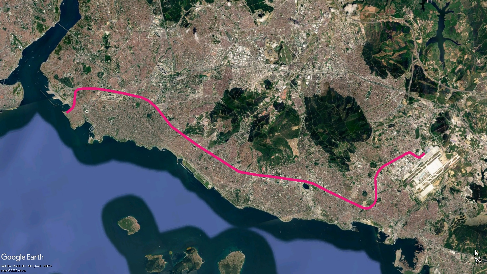
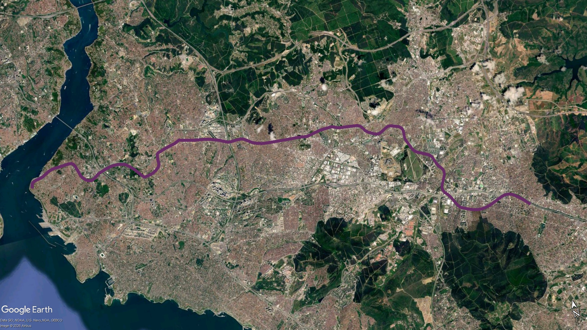
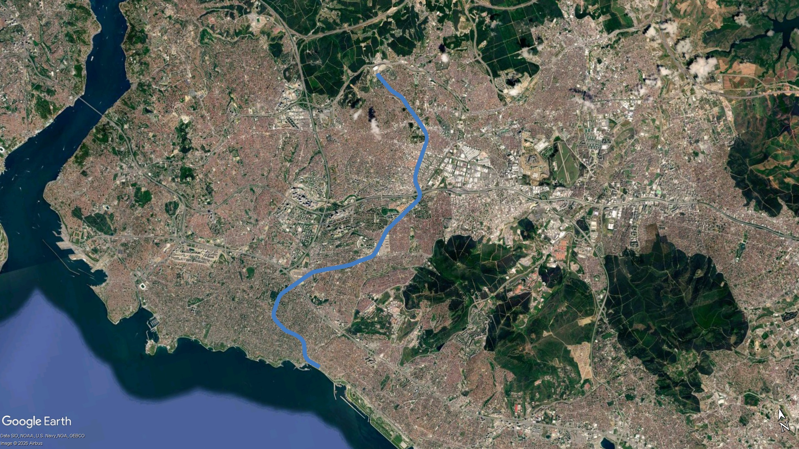
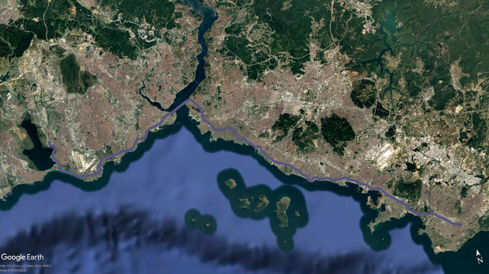

İşletmedeki Metro Hatları
İstanbul Anadolu Yakası'nda işletmedeki metro hatları.
 M4 Kadıköy - Sabiha Gökçen Havalimanı Metro Hattı
M4 Kadıköy - Sabiha Gökçen Havalimanı Metro Hattı
Sinyalizasyon: Thales SelTrac (GoA2, ATO, ATP)
Açılış: 17 Ağustos 2012 (Kadıköy-Kartal)
10 Ekim 2016 (Kartal-Tavşantepe)
Uzunluk: 33,6 km
İstasyon Sayısı: 23
Tren Marka Model: CAF S60000
Anadolu Yakası’nın ilk metro hattı olan M4, Kadıköy ile Sabiha Gökçen Havalimanı arasında tamamen yer altında hizmet vermektedir. Büyük ölçüde D.100 (E-5) karayoluna paralel bir güzergâh izleyen hat, İstanbul'un en yoğun ve en uzun raylı sistem arterlerinden biridir.

 M5 Üsküdar - Sultanbeyli Metro Hattı
M5 Üsküdar - Sultanbeyli Metro Hattı
Sinyalizasyon: Bombardier Cityflo 650 (GoA4, UTO)
Açılış:
15 Aralık 2017 (Üsküdar-Yamanevler)
21 Ekim 2018 (Yamanevler-Çekmeköy)
16 Mart 2024 (Çekmeköy-Samandıra Merkez)
22 Mayıs 2026 (Samandıra Merkez-Sultanbeyli)
Uzunluk: 30,9 km
İstasyon Sayısı: 24
Tren Marka Model: (Mitsubishi)-CAF İnneo / Hyundai Rotem (Geçici Olarak M8 Hattından Tedarik Edildi)
M5 (Üsküdar – Sultanbeyli) Metro Hattı, İstanbul'un Anadolu Yakası'nda hizmet veren 30,9 kilometre uzunluğunda ve 24 istasyonlu, Türkiye'nin ilk tam otomatik sürücüsüz metro hattıdır. İlk projelerde hafif raylı sistem olarak planlanan ancak yüksek yolcu talebi nedeniyle ağır metro standartlarına dönüştürülen hat; Üsküdar, Yamanevler, Çekmeköy ve Samandıra Merkez etaplarının ardından, 22 Mayıs 2026'da Sultanbeyli ve Sancaktepe Şehir Hastanesi istasyonlarının da açılmasıyla tamamen tamamlanmıştır. Güvenlik amacıyla Peron Ayırıcı Kapı Sistemi (PAKS) kullanılan bu modern hat, kentin doğu-batı aksındaki en kritik toplu taşıma omurgalarından birini oluşturmaktadır.

 M8 Bostancı - Parseller Metro Hattı
M8 Bostancı - Parseller Metro Hattı
Sinyalizasyon: Bombardier Cityflo 650 (GoA4, UTO)
Açılış: 6 Ocak 2023
Uzunluk: 14,2 km
İstasyon Sayısı: 13
Tren Marka Model: Hyundai Rotem
M8 (Bostancı – Parseller) Metro Hattı, İstanbul'un Anadolu Yakası'nda kuzey-güney aksında hizmet veren 14,27 kilometre uzunluğunda ve 13 istasyonlu bir tam otomatik sürücüsüz metro hattıdır. İnşaat çalışmaları finansman yetersizliği nedeniyle 2019 yılında durmuş, ancak Temmuz 2020'de öz kaynaklarla yeniden başlatılarak 6 Ocak 2023 tarihinde hizmete alınmıştır. Peronları 4 vagonlu trenlere göre tasarlanan ve 26 dakikalık sefer süresine sahip olan bu modern hat, kentin kuzey ve güney bölgelerini birbirine bağlayan en kritik toplu taşıma omurgalarından birini oluşturmaktadır.

 Marmaray Anadolu Yakası Kesimi
Marmaray Anadolu Yakası Kesimi
Sinyalizasyon: Siemens Trainguard Sirius (GoA2, ATO, ATP)
Açılış:
29 Ekim 2013 (Ayrılık Çeşmesi - Kazlıçeşme)
12 Mart 2019 (Ayrılık Çeşmesi - Gebze)
Uzunluk: 75,7 km
İstasyon Sayısı: 43
Tren Marka Model: Hyundai Rotem
Marmaray (Halkalı – Gebze) Banliyö Hattı, İstanbul Boğazı'nın iki yakasını deniz altından batırma tüp tünelle birleştiren ve kentin en uzun ulaşım aksını oluşturan banliyö treni sistemidir. İlk projeleri 1980'li yıllara dayanan ve inşaat sürecinde yapılan arkeolojik keşiflerle dünya tarihine ışık tutan bu devasa proje; Üsküdar, Ayrılık Çeşmesi ve Yenikapı gibi yeraltı istasyonlarını kapsayan ilk etabıyla 29 Ekim 2013'te, Gebze'ye kadar uzanan tüm hat genelindeki modernizasyon çalışmalarının tamamlanmasıyla da 12 Mart 2019'da tam kapasiteyle hizmete alınmıştır. Yüksek yolcu kapasitesine sahip 10 vagonlu modern tren setleriyle kesintisiz bir işletme sunan hat, kentin doğu-batı doğrultusundaki en stratejik ve en kritik toplu taşıma omurgasını oluşturmaktadır.
